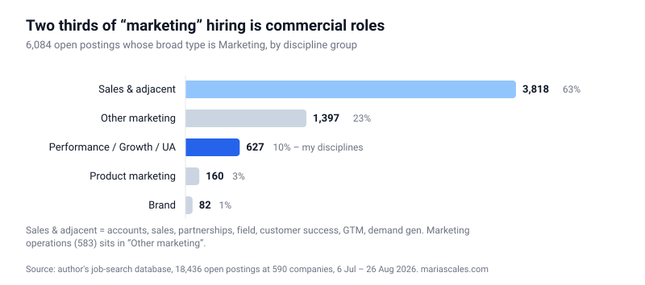
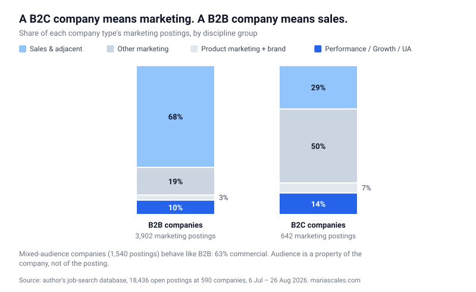
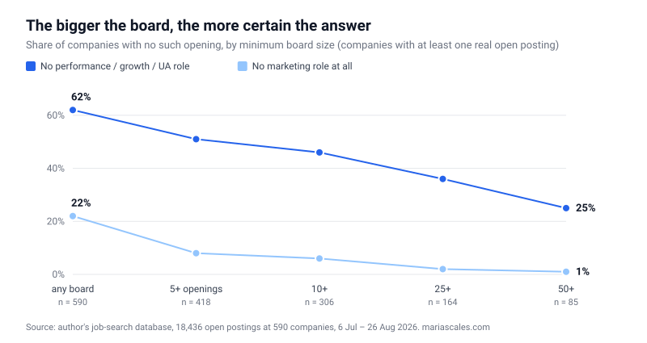
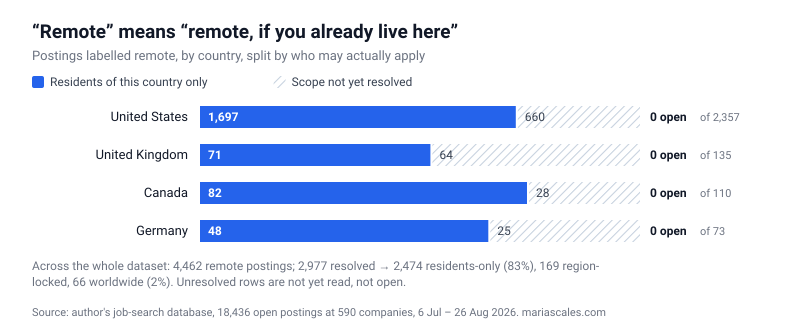
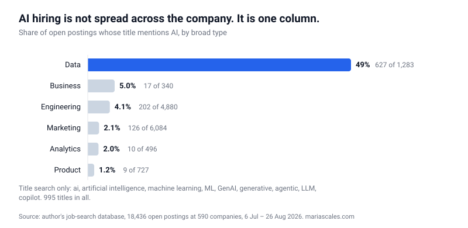
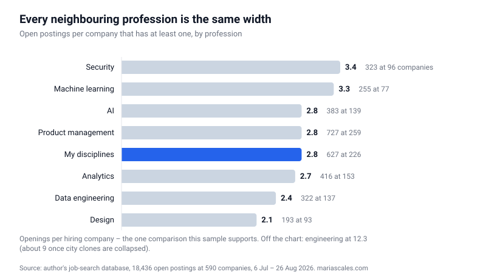
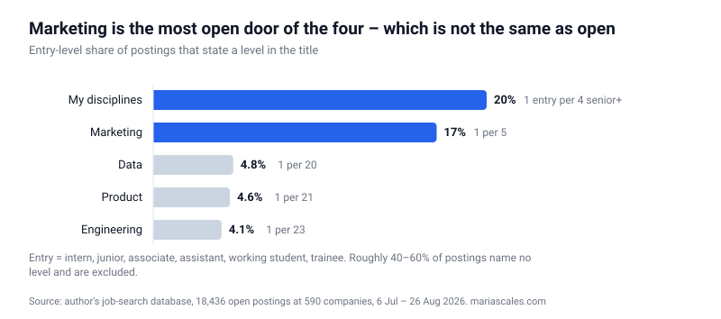

- Two thirds of what job boards file under “marketing” is sales: 3,818 of 6,084 open marketing postings across 590 company career pages are account executives, sales, partnerships, customer success and go-to-market.
- A B2B company that says “marketing” means sales (68% of its marketing hiring); a B2C company means marketing (29%). Any report that merges them describes neither.
- Every company hires marketers. A quarter of the largest boards hire no performance, growth or user-acquisition marketer at all.
- “Remote” works the same way: 83% of remote postings whose scope is known are for residents of one country. So does “AI”: inside marketing, AI titles mostly sell AI.
- Entry-level marketing is not closed – it is the most open door of the four: among postings that state a level, entry roles are 17–20% in marketing against 4–5% in engineering, product and data.
- There is no wider profession next door: product, analytics and every sub-field of data are exactly as narrow as marketing’s own disciplines – 2–3 openings per company – or narrower. The one denser column is engineering, and that is a different career. The problem is the label, not the candidate.
I am a growth and performance marketer. The job boards are full. My shortlist is not.
That contradiction is the most common complaint in my profession, and it is usually explained away as a personal problem: your CV is weak, your targeting is off, you are applying to the wrong companies. The structural explanations on offer are not much better: a cooling labour market, or ghost jobs – postings that were never attached to a real hire. I stopped guessing and built the database instead. Seven weeks later it holds 18,436 open positions, read one company career page at a time.
The gap turned out not to be about me. It is about what the word “marketing” contains.
6,084 marketing jobs. 627 of them are mine.
Search any board for marketing roles and you will get thousands of results. Search my database and you get 6,084 open positions whose broad type is Marketing, at 458 of the 590 companies with a live board. That is a real market – the largest single column in the dataset.
Then apply one filter – the roles a performance marketer can actually do – and the number becomes 627.
Not 627 that I would like. 627 that exist. Growth, performance, user acquisition, paid search, paid social, programmatic, CRO, marketing automation, influencer, plus the generic marketing-manager titles that name no discipline at all: ten buckets, 627 open roles, spread across 226 companies. That is 2.8 openings per company. Point demand, not a stream.
Of those 627, 313 are ones I could apply to at all; the rest sit behind residency lines, countries I have ruled out, and my own level and title filters.
So the honest version of the complaint is not “there are no jobs.” It is: the board is full of something, and that something is mostly not my profession.
The data, in one paragraph: 18,436 open positions at 590 companies, read directly from career pages and ATS APIs between 6 July and 26 August 2026, with 2,051 rows of page furniture stripped out and every title classified by 88 deterministic rules. The company list was assembled for one person’s search, so it leans towards consumer tech and the US – which means absolute volumes between professions are not comparable here, and only density, openings per company, is. The full method and its holes are at the end.
Finding 1: two thirds of “marketing” hiring is sales
Inside those 6,084 marketing positions, the largest disciplines are not marketing disciplines.
Accounts: 1,238 openings at 196 companies. Sales: 1,212 at 212. Partnerships: 379. Field marketing: 354. Customer success: 317. Go-to-market: 293. Demand generation: 25.
Together, the commercial cluster is 3,818 positions – 63% of everything filed under marketing. Marketing operations – another 583 – I count separately: it is a marketing function even when most of what it operates is a sales pipeline.
The two debatable lines in that cluster are go-to-market and customer success – in product-led companies both can sit closer to product than to sales. Move them out entirely and the cluster is still 3,208 postings, 53%: a majority under the most conservative reading of my own rules.

The remaining third is real marketing, and it is not what the profession’s public conversation suggests either. Creative production: 160. Product marketing: 160. Lifecycle: 128. Content: 133. Community: 90. Brand: 82. SEO: 32.
Paid acquisition – the discipline that spends the money – is a thin layer on top of all of it.
A sceptic’s objection lands here, and it is the right one: you classified those sales roles as marketing yourself. True, and that is the point. The classifier mirrors what a marketer sees when they search. An “Enterprise Account Executive” surfaces in a marketing search because the company filed it that way, the title carries marketing vocabulary, or the board’s own category says Marketing. The 63% is not a claim about how companies organise their departments. It is a measurement of what a marketer’s job search actually returns.
It is worth noting that the official taxonomies do not have this problem. The US Standard Occupational Classification separates Marketing Managers (11-2021.00) from Sales Managers (11-2022.00) as distinct occupations, with distinct tasks and distinct wage data. Job boards do not inherit that distinction, and neither does the search box a candidate types into.
Finding 2: B2B and B2C do not mean the same thing by “marketing”
Split the same column by what the company sells, and the structure changes shape.
At companies selling to businesses, 68% of marketing hiring is the commercial cluster. At companies selling to consumers, that share is 29%.

What the chart does not show is the size behind those percentages. B2C is 642 openings against 3,902 in B2B; a further 1,540 sit at companies that sell to both, and they behave like B2B (63% commercial). So a consumer company is far more likely to mean marketing when it says marketing – and there are a sixth as many of them. In absolute terms B2B still hires more people of my kind: 378 against 93.
For anyone reading a “state of marketing hiring” report, this is the finding that should travel: the same word describes two different labour markets, and any number that merges them describes neither.
Finding 3: every company has marketing. Three quarters are hiring for mine.
The previous two findings are about postings. This one is about companies, and it required throwing most of the database away.
Of 1,594 companies, only 590 had any real open position during the collection window. The rest tell us nothing – a board that is empty is not a company without a marketing department.
Among those 590, 22% had no marketing opening at all. That number is a trap, and the fix is to sort by board size.
| Board size | Companies | No marketing role | No role of my kind |
|---|---|---|---|
| any | 590 | 22% | 62% |
| 5+ openings | 418 | 8% | 51% |
| 10+ | 306 | 6% | 46% |
| 25+ | 164 | 2% | 36% |
| 50+ | 85 | 1% | 25% |

Read the gradient, not the first row. A company hiring three people may simply not need a marketer this month. A company hiring fifty is showing you its whole shape – and among those, exactly one company out of 85 has no marketing role open at all. Companies without marketing essentially do not exist. The 22% was small boards, not missing departments.
The second column does not fall the same way. A quarter of the companies hiring fifty people at once – 21 of 85 – have no performance, growth or UA role open. Twenty of the 21 are hiring marketers: three quarters of that hiring is the commercial cluster, a tenth is marketing operations, and at two of them the marketing column is sales and nothing else.
That is the finding I did not expect: marketing is universal, and my discipline is optional.
Who the killer is
The three findings are one mechanism.
“Marketing” is not a profession in the hiring market. It is a container, and the biggest thing inside it is revenue-facing sales. The container is what job boards index, what search filters query, what market reports count, and what every “marketing hiring is up 12%” headline is built on.
Which explains the contradiction I started with. The board is honestly full. The filter is honestly working. The 6,084 is real. Two thirds of it is another profession, and 90% of it is not mine.
This is also why the standard advice – apply more, broaden your search – makes the problem worse rather than better. Broadening inside a container that is two thirds sales returns more sales.
The word “remote” does the same job as the word “marketing”
Once you start looking for containers, they are everywhere. Here is the one that costs candidates the most time. It cost me a fifth of my market: of the 627 roles in my disciplines, 140 are locked to residents of a country I do not live in – and the word “remote” on every one of them hides it.
4,462 of the open positions are labelled remote. For a third of them my database has not yet established who may actually apply; of the 2,977 where it has, 2,474 – 83% – are remote only for residents of one country. Counted against every remote posting, resolved or not, that is still 55% – a floor, not an estimate. And it is not a preference but a legal requirement: you must already have the right to work there, from there.
Sorted by country, it is not a spectrum. Of 2,357 US postings marked remote, 1,697 are US-residents-only, 660 are still unresolved, and none – not one – is confirmed open to applicants outside the country. The UK, Germany and Canada read the same way: every resolved posting is residents-only, and the only thing that differs between countries is how many I have resolved.
Genuinely borderless remote – a role that will hire from anywhere – is 66 postings out of 2,977 resolved. Two percent. Another 169 are region-locked: EMEA, Americas, APAC.
So the honest translation of the word, in 2026 hiring data, is not “work from anywhere” and not even “work from your time zone.” It is “work from your home, in our country.” Residency, not geography, and certainly not flexibility.

The pattern is identical to the marketing one: a label that a search engine can filter on, wrapped around a set of things that are not the same. And in both cases the person paying for the ambiguity is the one reading the board, not the one writing it.
The same trick, live: what “AI” means in a marketing job posting
The container mechanism is not a historical artefact. You can watch it happen right now, on the most discussed word in hiring.
Across all 18,436 postings, 995 titles mention AI in some form – artificial intelligence, machine learning, GenAI, LLM, agentic, copilot. That is 5% of the market, at 202 companies. Real, and smaller than the conversation about it.
Where those roles sit is the finding. In the Data column, 627 of 1,283 open positions – 49% – are AI roles. In engineering it is 4.1%. In marketing, 2.1%.

And inside marketing’s 126 AI titles, the split repeats the pattern from the first finding. 69 of them – more than half – are selling AI – “Founding US Account Executive, Agentic AI”, “AI Customer Success Manager”, “Head of GTM, AI Inference”. Another 22 are engineers who landed in the marketing column by keyword: MLOps and infrastructure roles filed under marketing operations, machine-learning engineers working on search ranking filed under paid search because the title contains the word Search.
Roles where a marketer applies AI to marketing: around fifteen, and most of them are in creative and content – “Creative Director, AI Photography & Video”, “Content Strategist & Producer (AI-Native)”, “AI Video Lead”. In growth and performance: “SaaS Growth Strategist (AI-Native)”, “AI Marketing Technologist Lead”, and that is about it.
So the sentence “AI is transforming marketing” is, in hiring data, mostly a sentence about selling AI to marketers, not about marketers doing anything new. One caveat, stated plainly: this is a title search. A role can use AI daily and never say so in its name. What 2.1% measures is not how the work is done – it is what the market calls the work.
Checking the exits: is there a better profession next door?
If the market for my discipline is thin, the obvious move is to leave it. The dataset lets me check that instead of guessing, using density – openings per company, the one metric this sample supports.
Product management: a tie. 727 openings at 259 companies, 2.8 per company. My ten buckets: 627 at 226 companies, 2.8 per company. Identical demand density, minus a decade of experience.
Product marketing and brand: no better. Product marketing is 1.5 openings per company (160 at 106), brand 1.4 (82 at 60), content 1.6 (133 at 82). Against my performance 1.9, paid search 2.3, growth 1.5. My ten buckets sit in the middle by density, and together they are four times the volume of product marketing.
Data: the number lies. The broad Data type shows 4.9 openings per company – nearly double everything else, and the only genuinely attractive figure in the table. It is an artefact of the label. Split it and there are four separate professions underneath: AI 383 openings at 2.8 per company, security 323 at 3.4, machine learning 255 at 3.3, data engineering 322 at 2.4. Each one is an ordinary market. Data looks dense because it is the sum of four markets sharing a word – exactly the same aggregation trick that makes “marketing” look enormous.

Analytics: exactly the same width. 416 openings at 153 companies, 2.7 per company. And the label is doing work here too: alongside product analysts sit Revenue Analyst, Tax Analyst, Compliance Analyst, Workday Integrations Analyst. Product analytics is the minority of that number, and most of it requires working SQL and Python.
The one profession that is genuinely denser is engineering – 12.3 openings per company against my 2.8, or about nine once one company’s habit of posting the same five titles in 240 cities is collapsed (more on that below). That is not an adjacent field. That is a different career.
So the exits are closed. There is no neighbouring door that opens onto a wider market. Not for me, and – since the mechanism is the label, not my CV – not for anyone else in a narrow discipline either.
The other exit: is it a level problem, not a discipline problem?
There is one more explanation to rule out, and everyone asks about it: the common belief that entry-level marketing is impossible right now. The data says something more specific, and slightly more useful.
Among postings that state a level at all, entry roles – intern, junior, associate, assistant, working student, trainee – are 17% of marketing and 20% of my disciplines. For every entry-level marketing role there are roughly five at senior level or above.
Then the comparison flips the conclusion. In engineering, entry roles are 4% of level-stating postings, at 23 senior-or-above roles per entry one. Product: 4.6%, ratio 21 to 1. Data: 4.8%, ratio 20 to 1.

So yes, getting in is hard. But it is four to five times harder to get into engineering, product or data by this measure, and the story that marketing specifically has closed to beginners is not what these boards show. If anything, marketing is where the remaining entry doors are.
The caveat is doing real work here: roughly 40–60% of postings name no level, and an unmarked “Marketing Manager” is usually the middle of the ladder, not the bottom. This table does not measure how much work exists for a beginner. It measures who employers are willing to call a beginner – and they do it rarely, everywhere.
Where the evidence comes from
What this dataset is and is not, in full.
It is 18,436 currently open positions at 590 companies, collected between 6 July and 26 August 2026. Every posting was read directly from the company’s own careers page or its applicant tracking system – Greenhouse, Lever, Ashby, Workday, Personio, SmartRecruiters, Breezy and a long tail of custom boards – not from an aggregator. That distinction matters more every year: aggregated job data is now polluted by scrapers that republish other people’s postings, sometimes collecting applications the employer never sees. There are no duplicates from job-board syndication here, and no listings recycled by a third party: if a role is in this dataset, it was on the company’s own site during those seven weeks. A scraper that reads a careers page also reads the page – footers, benefit lists, blog headlines – and 2,051 such rows were marked and excluded before anything was counted. A handful of staffing agencies slipped into the company list; they hold about 1% of the rows.
Every posting is classified by title, using a table of 88 rules that assigns a broad type (Marketing, Engineering, Product, Data, Analytics, Operations, Design, HR, Business, Other) and a narrow discipline inside it. The rule table is mine, it is deterministic, and it is available on request, as are the underlying counts.
The company list came from six sourcing waves, from a Berlin LinkedIn list to the We Work Remotely feed, Y Combinator and the Istanbul consumer-tech scene. It was assembled for one person’s job search, which means the sample is skewed towards consumer and tech companies, and towards the US: 6,985 of the postings sit in the United States, then the UK at 689, India 641, Germany 563, Canada 441.
That skew has one hard consequence, and every cross-profession comparison above obeys it: absolute volumes between professions are not comparable here. How many marketing jobs versus engineering jobs exist in this dataset says more about which companies I collected than about the labour market. What is comparable is density – openings per company, on boards I read in full. That number does not care how many companies of each type I happened to add. Salaries are not discussed at all: fewer than one posting in twenty mentions one.
How I might be wrong
Five things this data cannot tell you, stated plainly – and three checks it survives.
It is not the labour market. It is 590 companies chosen for one person’s search. Cross-profession volumes are meaningless here; density is the only fair comparison, and I have used only that.
It is a snapshot, not a trend. Seven weeks of one summer. Nothing in this article says any of these numbers are rising or falling, because seven weeks cannot say that.
The taxonomy is mine. 88 title rules, written by me, applied deterministically. Reasonable people would classify some of those roles differently. Whether “Account Executive” belongs under marketing is exactly the debate this article is about, so the rules are available on request – disagree with a specific line rather than a vibe. The same goes for my own 627: 168 of them are generic marketing-manager titles that name no discipline. Drop those and the nine named disciplines are 459 roles at 180 companies, 2.6 per company – the argument does not change.
Audience is a property of the company, not the posting. “Brand · B2B” means a brand role at a company selling to businesses. It does not mean the role itself is B2B brand work.
Seniority is read from the title only, which is a weak instrument – roughly 40 to 60% of postings do not state a level at all – so the section on it above reports shares of the roles that do state one, and nothing else.
Now the checks. Scraped pages leave residue. I marked and excluded 2,051 rows of page furniture, and some certainly got through: product pages and department headers filed as roles. So I re-ran everything on the boards read through an ATS API alone, where no page is scraped at all – 13,373 postings at 346 companies. The commercial share of marketing there is 61% against 63% overall; my disciplines are 3.0 openings per company against 2.8; the B2B and B2C shares are 65% and 29% against 68% and 29%; and on boards of fifty or more, no company lacks marketing and a quarter lack my job – the same quarter.
Boards clone. One company posts the same five engineering titles in some 240 cities, which alone is a quarter of the engineering column; another lists “Major Account Manager” 61 times, once per territory. Collapsing every posting to one per company and title, the commercial share is 60%, engineering falls from 12.3 to about 9 openings per company, product from 2.8 to 2.6, my disciplines from 2.8 to 2.3. The order does not change; the gaps shrink. (A further 428 rows my own pipeline flags as exact duplicates – same title, same location, same company – stay in every count above; removing them moves no share by more than half a point.)
Two companies are 15% of the rows. Without them, the commercial share is just under 60%.
Nothing in this article moves by more than a few points under any of these, which is the strongest thing I can say about it.
What to do with this
If you are looking for a marketing job: stop counting postings and start counting your discipline. The board’s number is the container’s number, and it will keep telling you the market is healthy while your own market is 10% of that. Filter first, then judge whether the problem is you.
Filtering, in practice: throw the container’s biggest tenants out right in the search box – ("performance marketing" OR "growth marketing" OR "user acquisition") -sales -"account executive" -"customer success" -"business development" strips most of the commercial cluster on any board that honours boolean operators. Better still, skip aggregators entirely: site:boards.greenhouse.io OR site:jobs.lever.co OR site:jobs.ashbyhq.com "performance marketing" searches companies’ own boards – the same sources this dataset is built on, no scraper required. Neither trick fixes the residency problem: that one lives inside the posting text, and reading the text is the part no search operator does for you.
If you are hiring: the word on your job posting decides who finds it. Filing an account executive role under marketing is free for you and expensive for every marketer searching that week. It is also expensive for you, in candidates who never see the role they would have been right for.
If you read market reports: ask what is inside the label before you quote the number. Statistical agencies maintain occupational taxonomies precisely because labels drift; the SOC major groups exist so that “marketing” means one thing across datasets. Hiring platforms are under no such obligation, and their categories are the ones everyone quotes. Marketing looks like the biggest profession in my dataset and mostly is not marketing. Data looks like the densest and is four professions wearing one badge. The aggregation trick is not unique to hiring data – it just happens to be very visible there.
I built this database to find a job. It told me why the search felt the way it did, which turned out to be worth the seven weeks on its own.
Data: 18,436 open positions at 590 companies, collected 6 July – 26 August 2026, read directly from company career pages and ATS APIs. Classification: 88 deterministic title rules. Rule table and underlying counts available on request.